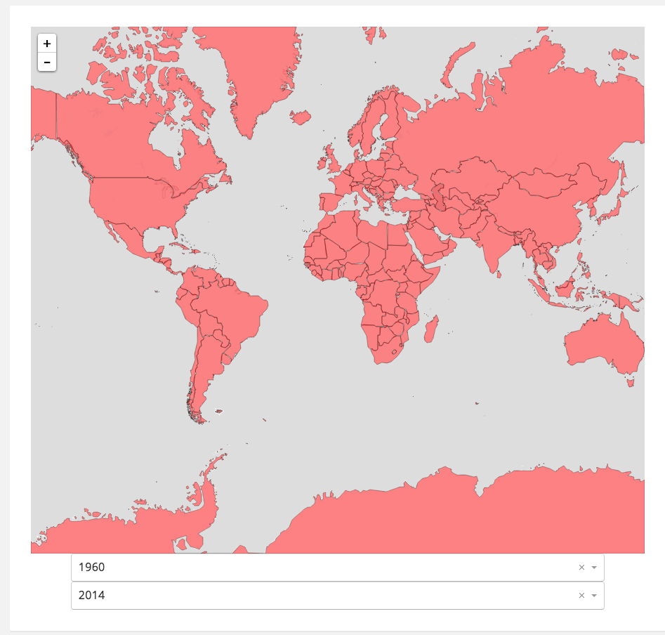
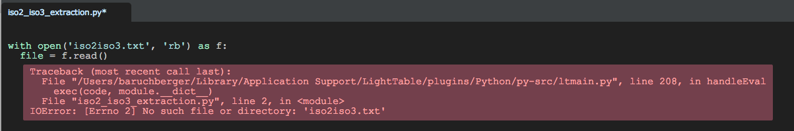
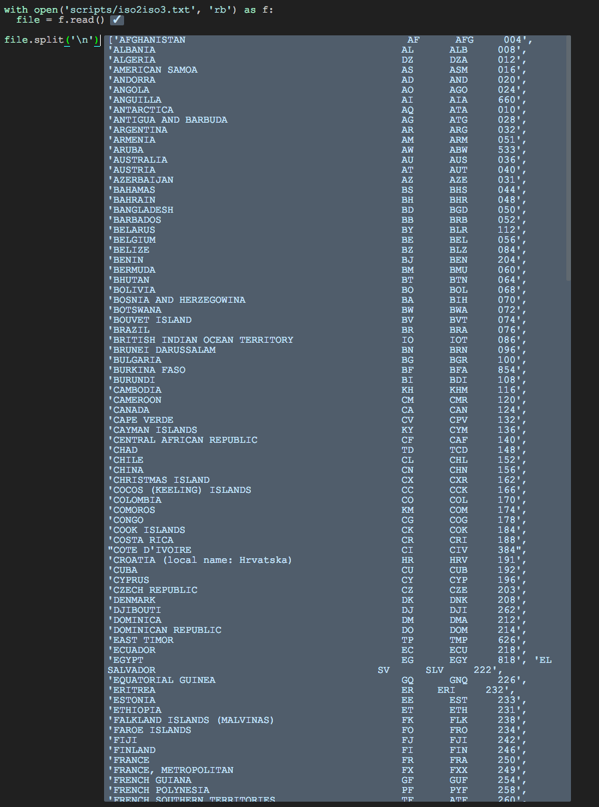
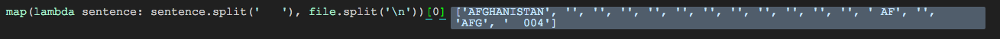
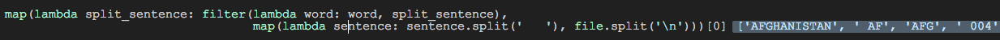
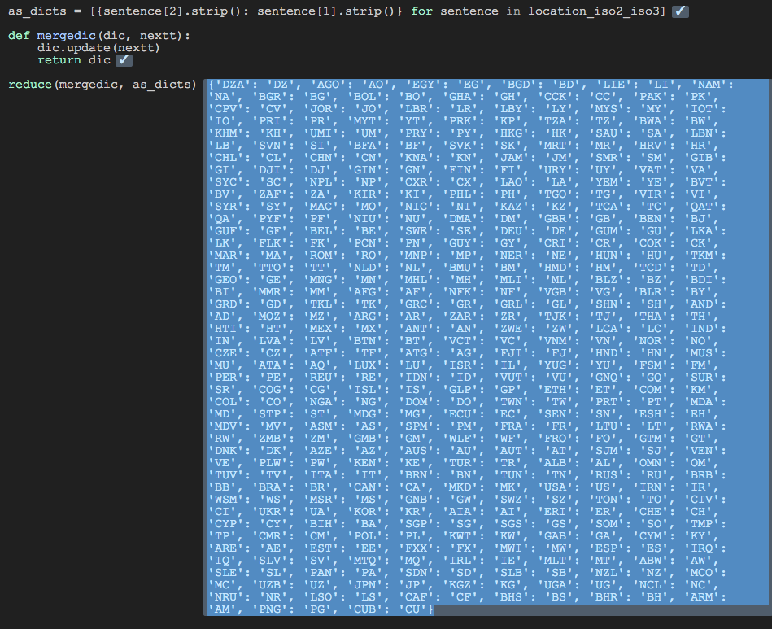
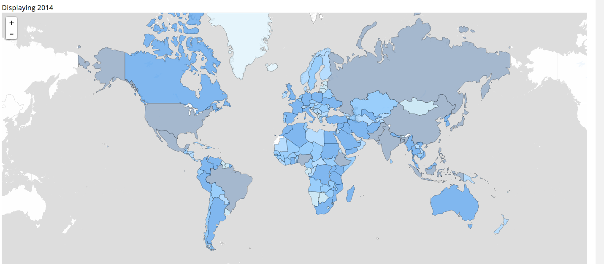

Choropleth dataDot
In the data-dot app I am making we need to show map of the world and be able to project all the countries and fill them with a color based on the user selected indicator, also called a choropleth.
After struggling for quite a bit with getting mapbox set-up in my webpack project and have it load TopoJson I end up with a map ready to be choroplethed: 
One of the first problems I run into is that the TopoJson layer used only has the ISO3 code in its features (countries in this case). However the dataset used so far uses the ISO2 codes. In the end we will need to coordinate with the World Bank some more to get additional data on the custom ISO codes they have used for regions but for now I grab a the first legit looking iso2 to iso3 index I can find. I spin up the tool with the best quick feedback for python: lighttable. I open the file with iso codes which I had stored it the scripts directory of the repo.

Hmm. Seems that lighttable starts the python executable from a different path then I opened the file in. Lighttable is still lacking a bit in project handling but did properly sense the project root as os.getcwd() shows me.

Succes, but it seems that there is something going on with the spacing on El Salvador, probably not be a problem though as it seems correctly split.
The lines are not nicely formatted, usually we can split on a comma but this file seems to use some inconsistent amount of spaces. We can't split on single spaces because that would break countries with spaces, like El Salvador. However we can split on multiple spaces:

After removing the empty strings we can grab the iso 2 and iso 3 codes.

We do list comprehension (more pythonic than map and filtering), strip the remaining spaces on the sides and merge all to grab the valid json we want to use in the app:

Now we have a way to know which feature is which country when interacting with mapbox.
Now to get a basic choropleth we use some d3 magic to evenly divide the colors over the domain with the d3.scale.quantile function. The scales that the graph is based on also required the whole domain so we can get that from the stored state.
Redux tries to let all changes to the state of the application pass through the properties of react components by removing the react "this" from the scope. This is to keep the render function as "pure" as possible. Mapbox components themselves are stateful objects though, so when the choropleth layer gets added the old one needs to be removed. Storing the new choropleth layer in the props during the update of the component causes an infinite loop. An easy solution would be to compare the layers before storing it so the infinite loop would stop. However since mapbox layers are not immutable we can't compare them by value. I tried to use a function to greedily turn the objects into immutable objects, but sadly that causes a stack overflow, a little too greedy! After thinking about it for a while I figure that I can just clear the layers every update and re-add the non changing layers. This way I don't cause infinite updates by changing one of the dependencies.
In store we already have the data of some pre-selected location-indicatorType combinations, however for the choropleth we are interested in all the locations so we make a new query to the back-end. The choropleth can -for now- only display one year of data. After some playing around with the onEachFeature property and passing the domain and correct value for the location to the colorscale function we end up with this:
